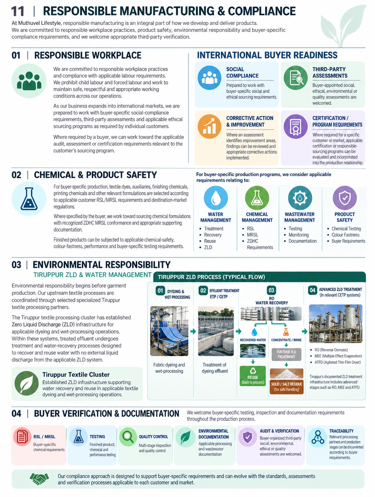

Responsible manufacturing is part of how a collection is developed and delivered.
We work to applicable workplace practice, product safety, environmental responsibility, and buyer-specific compliance. Appropriate third-party verification is welcome.
Workplace practice, product safety, environmental responsibility, and the requirements of each buyer.

Responsible manufacturing is part of how a collection is developed and delivered.
We work to applicable workplace practice, product safety, environmental responsibility, and buyer-specific compliance. Appropriate third-party verification is welcome.
We follow applicable labour requirements. Child labour and forced labour are prohibited. Working conditions are kept safe and appropriate across operations.
As supply reaches international markets, we are prepared to work with a customer’s social-compliance requirements, third-party assessments, and applicable ethical sourcing programs.
Where a buyer requires it, we can work toward the audit, assessment, or certification relevant to that sourcing program. If an assessment finds improvements, the findings are reviewed and corrective actions are put in place.
Buyer-appointed social, ethical, environmental, or quality assessments are welcome. Certification or responsible-sourcing programs required for a customer or market can be evaluated and built into the production relationship.
Dyes, auxiliaries, finishes, and printing chemicals follow the buyer’s restricted-substance lists and the destination market.
Where the buyer specifies it, we work toward chemical formulations with recognized ZDHC MRSL conformance and the supporting documents. Finished products can be tested for chemical safety, colour-fastness, performance, and other buyer requirements.
Environmental responsibility starts before the garment is cut.
Dyeing and wet processing are coordinated with specialized Tiruppur textile partners. The Tiruppur textile cluster has Zero Liquid Discharge infrastructure for applicable dyeing and wet-processing operations. Treated effluent goes through treatment and water recovery so water can be reused, with no external liquid discharge from the applicable ZLD system.
A typical flow is dyeing and wet processing, then effluent treatment, reverse-osmosis recovery, and advanced ZLD treatment in the relevant common-effluent plants — including reverse osmosis, multiple-effect evaporation, and agitated thin-film drying where those stages are part of the system. Recovered water returns to the process. Concentrate is treated further. Solid residue is handled for safe disposal.
Testing, inspection, and documents can run through the whole production relationship.
The compliance approach can follow the assessments and verification each customer and market requires.
Discuss a sourcing program